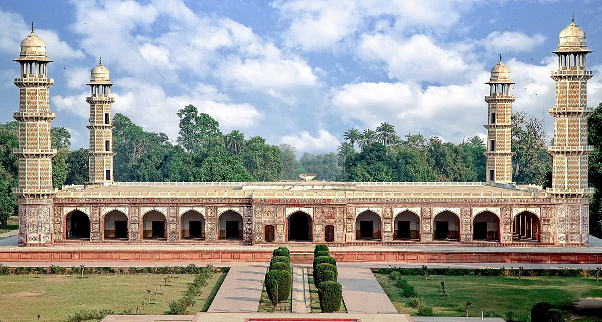

<div class="portfolio-single-load clearfix">
    <div class="custom-full-width-box">
        <div class="custom-container">
            <div class="custom-row align-items-center">
                <div class="custom-image-column">
                    
                </div>
                <div class="custom-text-column">
                    <h2 class="custom-heading">Jahangir's Tomb</h2>
                    <p class="custom-paragraph">
                        Located in Shahdara, Lahore, Jahangir's Tomb is the final resting place of Emperor Jahangir, one of the greatest Mughal rulers. Built in the early 17th century by Jahangir's son, Shah Jahan, the tomb is a masterpiece of Mughal architecture, adorned with intricate marble carvings, inlaid tile work, and ornate calligraphy. Surrounded by lush gardens and reflecting pools, Jahangir's Tomb is a serene and majestic monument, honoring the legacy of one of South Asia's most influential emperors.

                    </p>
                </div>
            </div>
        </div>
    </div><!-- .custom-full-width-box end -->

</div><!-- end single-project -->
